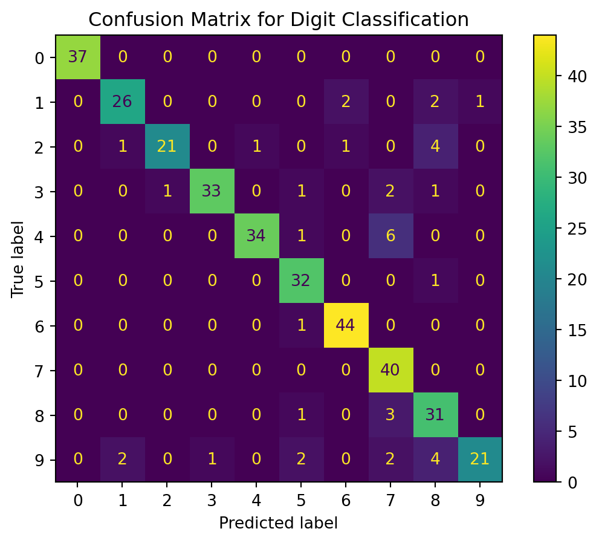

# Imports
from sklearn.naive_bayes import GaussianNB
from sklearn.model_selection import train_test_split
from sklearn.datasets import load_digits
from sklearn.metrics import accuracy_score, precision_score, f1_score
from sklearn.metrics import ConfusionMatrixDisplay, confusion_matrix
# Constants for random state of the splitting data, and test size as a percentage
RANDOM_STATE = 20
TEST_SIZE = 0.2
# Load the data into data, and target variables separately
X, y = load_digits(return_X_y = True)
# Split the data using train_test_split
X_train, X_test, y_train, y_test = train_test_split(X, y,
test_size = TEST_SIZE,
shuffle = True,
random_state = RANDOM_STATE)
# Instantiate a Naive Bayes Gaussian Classifier
clf = GaussianNB()
# Fit the clasifier to the training data
clf.fit(X_train, y_train)
# Predict the test data
y_pred = clf.predict(X_test)
# Print the accuracy
print(f"Accuracy: {accuracy_score(y_test, y_pred)}")
print(f"Precision: {precision_score(y_test, y_pred, average = 'weighted')}")
print(f"F1 Score: {f1_score(y_test, y_pred, average = 'weighted')}")
print(f"First 20 Elements of True Target Data: {y_test[:20]}")
print(f"First 20 Elements of Predicted Target Data: {y_pred[:20]}")
# Create the confusion matrix
cm = confusion_matrix(y_test, y_pred, labels = clf.classes_)
# Plot the confusion matrix
disp = ConfusionMatrixDisplay(confusion_matrix = cm, display_labels = clf.classes_)
disp.plot()
disp.ax_.set_title("Confusion Matrix for Digit Classification");Accuracy: 0.8861111111111111
Precision: 0.9003197937062434
F1 Score: 0.8855893653343448
First 20 Elements of True Target Data: [0 7 9 5 8 1 3 3 7 0 9 4 7 4 0 1 1 8 1 3]
First 20 Elements of Predicted Target Data: [0 7 7 5 8 1 3 3 7 0 9 4 7 4 0 1 1 8 6 3]